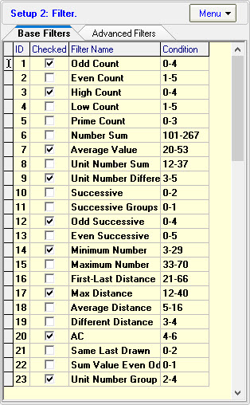
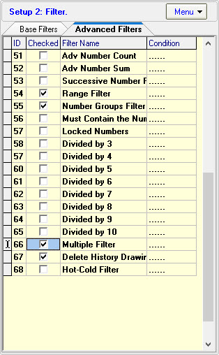
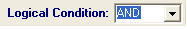
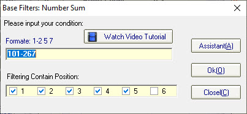
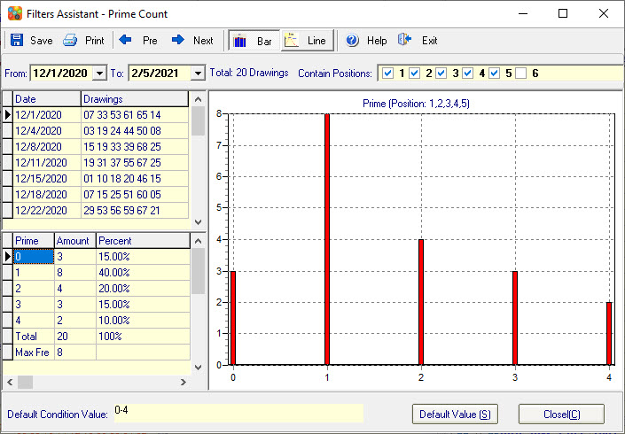

1. Base Filters
In the Setup Two Panel click "Base Filters" sheet dispaly the base filters panel:

Supports 50+ filters. if you want get about base filters explain click here.
[Top]
2. Advanced Filters.
In the Setup Two Panel click "Advanced Filters" sheet dispaly the advanced filters panel:

Supports 20+ advanced filters, if you want get about advanced filters explain click here.
[Top]
3. What is the "Logical Condition"?

In filter panel you can set logical condition, if logical condition = "AND" when you start filtering all selected filters conditions must correct, if logical condition = "OR" only need one filter condition correct.
you can set logical condition yourself, for example: if we selected 5 filters, we can set the logical condition = "3-5", this is a Fault-tolerant function.
[Top]
4. How to set the base filters condition?
In base filters panel click will dispaly the base filters window:

Click "Assistant" button you can see the current filter statistic and chart, input your condition value, click "Ok" button to save condition.
[Top]
5. How to set the advanced filters condition?
In filters panel cick display the advanced filter window:

Click "Assistant" button see current filter statistic and chart, input your condition value, click "Ok" button save condition.
[Top]
6. How to use the filters assistant?
Click "Assistant" button you can see the current filter chart:

We can use the chart set the filters conditions, for example: we can see Odd filter: value 1 appear 5 times, value 2 appear 5 times, value 3 appear 4 times, value 4 appear 2 times, value 5 appear 2 time, in this way we can set the Odd conditions: 1-5.
[Top]
7. What is "Filtering Contain Position"?